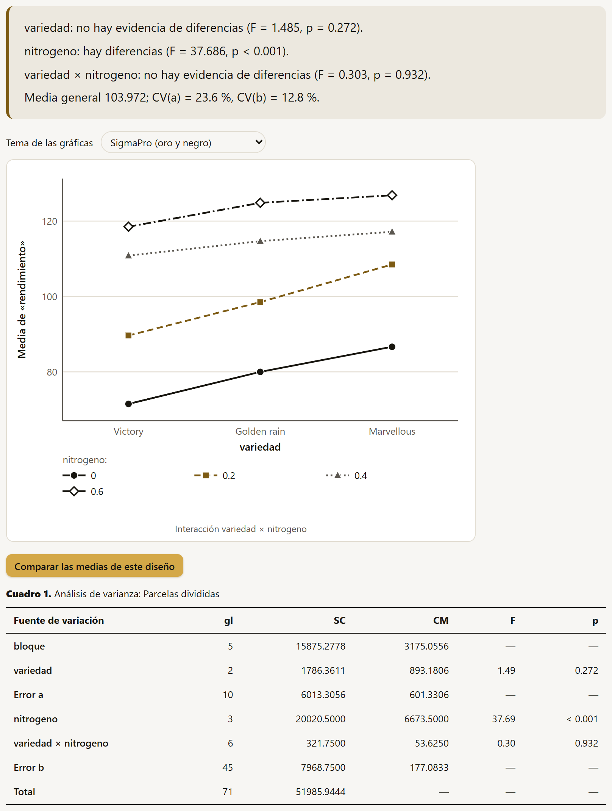
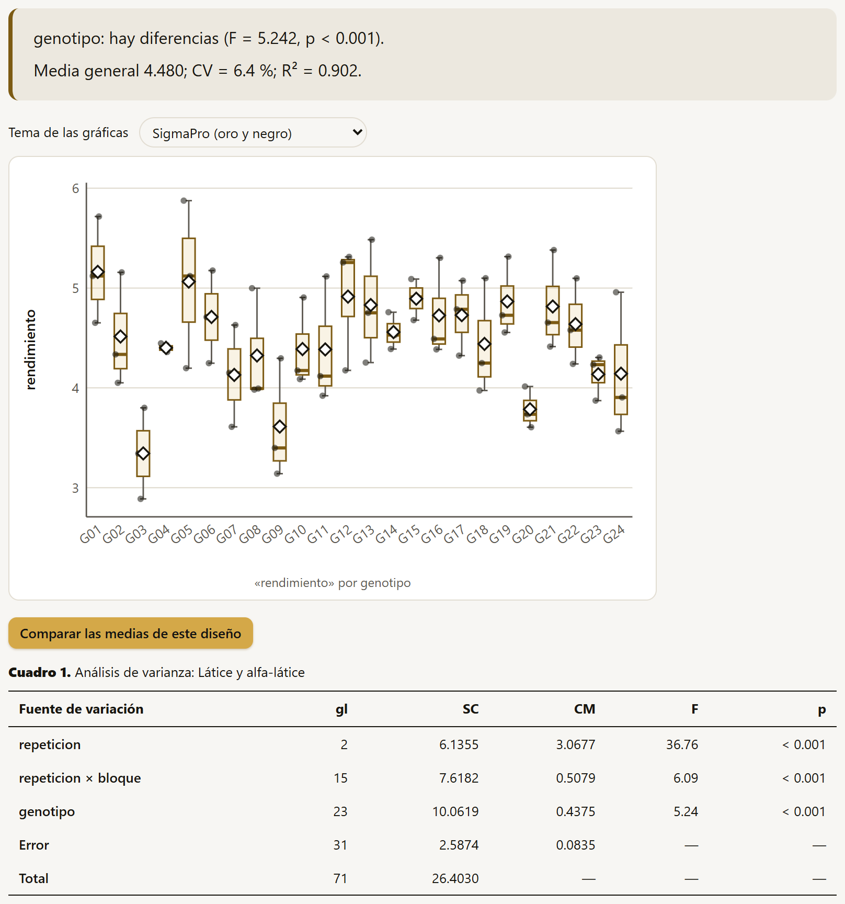
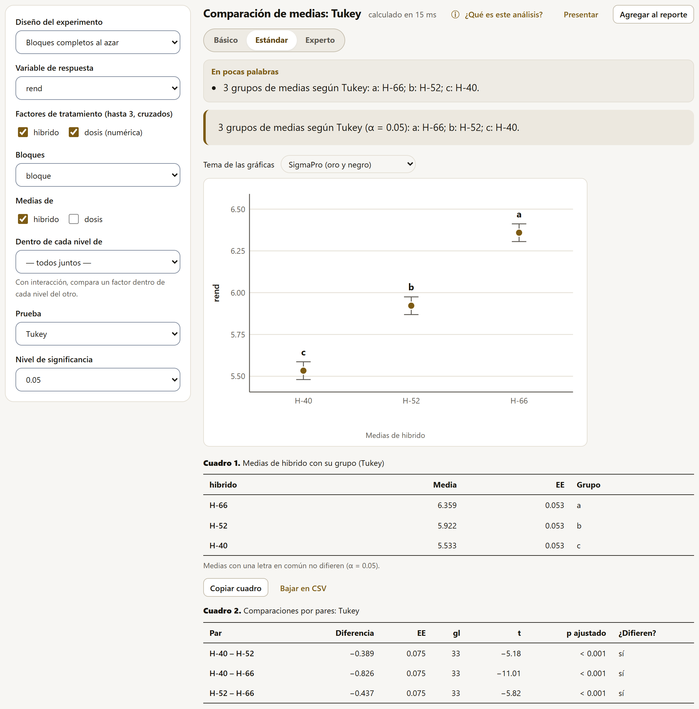
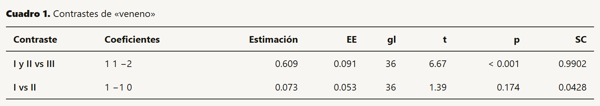
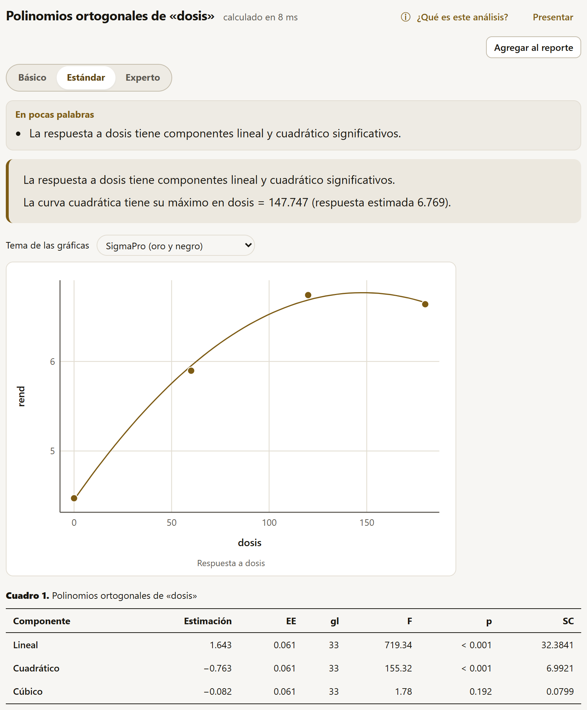

El análisis de varianza de un diseño experimental separa la variación de la respuesta en la que se debe a los tratamientos, la que se debe a la forma en que se acomodó el ensayo (bloques, filas, columnas, parcelas grandes) y la que queda sin explicar (el error). Cada diseño tiene su modelo y, en algunos, más de un error. SigmaPro trae los nueve más usados en la investigación agrícola.
| Diseño | Modelo | Cuándo |
|---|---|---|
| Completamente al azar | y ~ A * B * C | Unidades homogéneas (macetas en cámara, cajas de germinación); hasta tres factores cruzados. |
| Bloques completos al azar | y ~ bloque + A * B * C | El más común en campo: cada bloque tiene todos los tratamientos y agrupa parcelas parecidas. |
| Cuadro latino | y ~ fila + columna + A * B | Variación en dos direcciones (pendiente y fertilidad); cada tratamiento una vez en cada fila y en cada columna. |
| Parcelas divididas | Error(bloque/A) | Un factor que solo se puede aplicar a parcelas grandes (riego, labranza, fecha de siembra) y otro dentro de ellas. |
| Parcelas subdivididas | Error(bloque/A/B) | Tres factores, cada uno en parcelas más chicas que el anterior. |
| Parcelas en franjas | Error(bloque/(A + B)) | Dos factores aplicados en franjas que se cruzan (labranza en un sentido, riego en el otro). |
| Bloques incompletos balanceados | y ~ bloque + trat | Más tratamientos que parcelas por bloque, con cada par de tratamientos juntos el mismo número de veces. |
| Látice y alfa-látice | y ~ rep + rep:bloque + trat | Muchos genotipos (mejoramiento): bloques incompletos dentro de repeticiones completas. |
| Modelo lineal general | La fórmula que se escriba | Lo que no encaja en los anteriores: anidados, covariables con interacciones, factores extra. |
Todos piden la Variable de respuesta y los papeles del diseño: los Factores de tratamiento (hasta 3, cruzados), los Bloques, las Filas y Columnas, el Factor de la parcela grande y el de la subparcela, las Repeticiones, según el diseño. Una columna numérica con pocos valores (una dosis) aparece marcada «(numérica)» y se usa como factor. Los diseños de un solo error ofrecen además las Sumas de cuadrados (tipo I, II o III) y todos el Nivel de significancia. En las parcelas divididas se elige también en qué diseño están las parcelas grandes: en bloques completos, completamente al azar o en cuadro latino.
Con datos balanceados (el mismo número de observaciones en cada combinación), los tres tipos dan lo mismo y la nota del cuadro lo dice. Con datos desbalanceados (parcelas perdidas, tratamientos con distinto número de repeticiones), cada tipo prueba una hipótesis distinta:
Algunas situaciones se reconocen solas y se explican en un aviso: más de una parcela por tratamiento en cada bloque (bloques generalizados: se estima la interacción bloque × tratamiento), combinaciones de bloque y tratamiento perdidas (las medias se ajustan), celdas vacías (la suma de cuadrados tipo III no existe y se usa la II) o un término confundido con otro.
En estos diseños cada factor se aplicó a unidades de distinto tamaño, así que cada uno tiene su propio error: el factor de la parcela grande se prueba contra el error a (bloque × parcela grande) y el de la subparcela y la interacción contra el error b (la variación dentro de las parcelas grandes). El cuadro lo explica en su nota, y los bloques no se prueban porque su estrato no tiene error propio. Analizar estos ensayos como un factorial común usaría un solo error y daría pruebas F falsas, casi siempre a favor del factor de la parcela grande.

Las subdivididas agregan un tercer estrato (Error(bloque/A/B), con errores a, b y c) y las franjas tienen tres errores: uno para cada factor y otro para su interacción. Con datos desbalanceados (parcelas perdidas), las pruebas F de los estratos dejan de ser exactas y la app lo advierte; en ese caso conviene el modelo mixto de la sección 4.15, que maneja el desbalance.
Cuando hay más tratamientos que parcelas caben en un bloque homogéneo, cada bloque recibe solo algunos. El análisis intrabloque compara los tratamientos dentro de los bloques: su suma de cuadrados es secuencial (tipo I), con los tratamientos al final, ajustados por los bloques, y sus medias son medias ajustadas. La nota del cuadro lo recuerda. En los bloques incompletos balanceados, el resultado trae además sus parámetros (tratamientos t, bloques b, tamaño del bloque k, repeticiones r, veces que coincide cada par λ) y su eficiencia; si el diseño no es un BIB exacto, la app lo dice y el análisis intrabloque sigue siendo válido.

El análisis intrabloque desperdicia la información que hay entre los bloques. Para recuperarla, con los bloques como efecto aleatorio, está Látice y alfa-látice (recuperación entre bloques), en los modelos mixtos (sección 4.15); para la heredabilidad de los genotipos, la sección 4.16.
Para los modelos que no son un diseño del catálogo, Modelo lineal general (fórmula) pide la respuesta y los Términos del modelo (lo que va después de «~», con la notación de la sección 4.4), las numéricas que son tratamientos, el tipo de suma de cuadrados y los niveles de confianza y significancia. Entrega el análisis de varianza, los coeficientes (con contrastes de tratamiento: cada nivel comparado con el primero), una gráfica de las medias marginales y las medias de cada término. Es también lo que usa el constructor cuando la fórmula se escribe a mano.
Un análisis de varianza dice si los tratamientos difieren, no cuáles. Para eso están los cuatro métodos de esta familia, que trabajan sobre el modelo de cualquiera de los diseños de la sección anterior: el formulario empieza por el Diseño del experimento y sus papeles, y luego pide qué comparar.
| Método | Para qué |
|---|---|
| Comparaciones de medias | Todos los tratamientos entre sí (o contra un testigo), con las letras de grupos. |
| Contrastes | Comparaciones planeadas de antemano (el testigo contra el resto, un grupo contra otro). |
| Polinomios ortogonales | La forma de la respuesta a un factor cuantitativo (una dosis): lineal, cuadrática, cúbica, y la dosis óptima. |
| Medias ajustadas | Las medias marginales estimadas con su intervalo de confianza, sin comparar. |
Dos campos son comunes: Medias de (o Factor), el factor cuyas medias se comparan, y Dentro de cada nivel de. Si la interacción es significativa, comparar las medias de un factor promediando sobre el otro puede engañar; entonces se compara un factor dentro de cada nivel del otro (las dosis dentro de cada híbrido), y el resultado trae un cuadro y una gráfica por nivel.

La Prueba elige cómo se controla el error de hacer muchas comparaciones a la vez:
| Prueba | Cómo es |
|---|---|
| Tukey | Todos los pares, con el error de toda la familia de comparaciones controlado. La opción por omisión y la más recomendada para comparar todo contra todo. |
| DMS de Fisher y DMS protegida | La diferencia mínima significativa, sin ajuste por multiplicidad (encuentra más diferencias, también falsas). La protegida solo declara diferencias si la F del ANOVA para ese factor fue significativa; si no, todas las medias quedan con la misma letra. |
| Duncan y Student-Newman-Keuls | Pruebas por pasos, tradicionales en agronomía; controlan peor el error que Tukey. |
| Scheffé | Válida para cualquier contraste, no solo pares; muy conservadora. |
| Bonferroni, Šidák y Holm | Ajustes generales del valor p; Holm es el más potente de los tres. |
| Dunnett | Cada tratamiento contra un testigo, que se elige en el formulario; más potente que Tukey para esa pregunta. |
| Games-Howell | Todos los pares sin suponer varianzas iguales. |
El resultado trae la conclusión con los grupos («c: H-40; b: H-52; a: H-66»), la gráfica de las medias con su error estándar y sus letras, el cuadro de medias con su grupo y el de las comparaciones por pares (diferencia, EE, gl, t, p ajustado y si difieren). Las medias son las marginales estimadas del modelo del diseño y el error es el de ese diseño: en unas parcelas divididas, cada comparación usa el error y los grados de libertad que le corresponden.
Un contraste compara grupos de tratamientos con coeficientes que suman cero. Se escriben en el campo Contrastes, uno por renglón, con la forma nombre: coeficientes en el orden de los niveles que la ayuda muestra debajo:
I y II vs III: 1 1 -2 I vs II: 1 -1 0

Cada contraste trae su estimación, EE, gl, t, p y suma de cuadrados. Si los contrastes son ortogonales entre sí (sus coeficientes multiplicados término a término suman cero), sus sumas de cuadrados se reparten sin traslaparse la de los tratamientos, y la nota lo dice. Los contrastes se planean antes de ver los datos; elegidos después, tienen el problema de las comparaciones múltiples.
Con un factor cuantitativo (dosis de nitrógeno, densidades, temperaturas), lo interesante no son las diferencias entre dosis sino la forma de la respuesta. Los polinomios ortogonales descomponen la variación entre dosis en un componente lineal, uno cuadrático y uno cúbico, cada uno con su prueba. Se elige el Factor cuantitativo y el Grado de la curva (recta, cuadrática con la dosis óptima, o cúbica).

Los coeficientes ortogonales se calculan sobre los niveles reales de la dosis, también si no están igualmente espaciados. Con la curva cuadrática, la app ajusta la ecuación a las medias (y = 4.454 + 0.03133·x − 1.060·10−4·x² en el maíz, con su R²) y da la dosis del máximo o del mínimo; si cae fuera de las dosis probadas, lo advierte, porque no conviene extrapolar. Para una respuesta que se estabiliza en una meseta, conviene el modelo lineal-meseta (sección 4.18).
Las medias marginales estimadas son los promedios que predice el modelo para cada nivel, con pesos iguales sobre los demás factores. Con datos balanceados son las medias de siempre; con parcelas perdidas o con covariables, son las que corresponde publicar. El método da, para el factor elegido (y dentro de cada nivel de otro, si se pide), la media, su EE, los grados de libertad y su intervalo de confianza, con una gráfica.